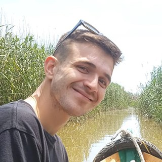

Pablo Amador
average wetland enjoyer
I am a postdoctoral researcher in aquatic ecology and ecotoxicology at the Cavanilles Institute of Biodiversity and Evolutionary Biology, University of Valencia. I combine data analysis and modelling to study how environmental pressures reshape the biodiversity and functioning of aquatic ecosystems, from plankton to fish.
I am currently hired by the STABLE project, which tests whether aquatic ecosystems resist and recover from chemical pollution in the same way in boreal, Mediterranean and tropical climates. My job there is the data side: turning mesocosm experiments into measures of resistance, resilience, recovery and invariability, and modelling what drives them.
I also do a good part of my research at the Albufera, from the Albufera Biological Station, where I have worked on a bit of everything: long-term time series, ecological risk assessment and trait-based ecology.
…